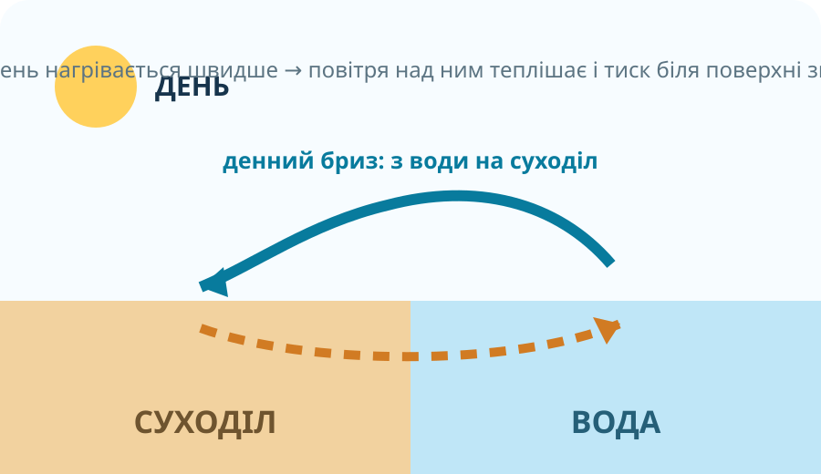
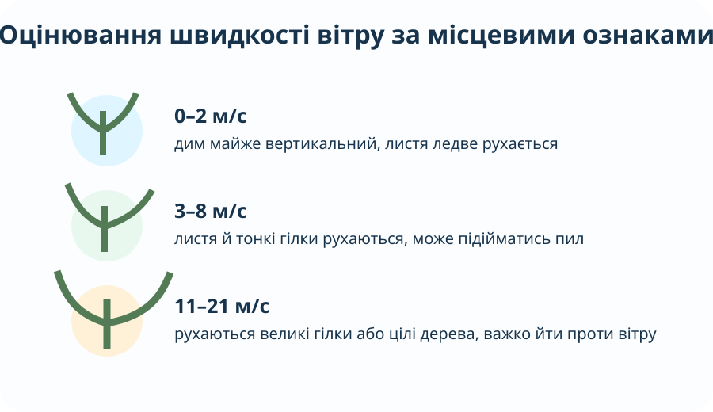

Що змушує повітря рухатися?
Модель двох ділянок
Ліворуч повітря охолодилося й стало щільнішим; праворуч поверхня нагріла повітря сильніше. Натискайте кнопки й стежте, як змінюється різниця тиску.

Підказка: над суходолом і водою тиск змінюється по-різному, бо вони нагріваються й охолоджуються з різною швидкістю.«Північний вітер» — куди він дме?

Метеорологи називають вітер за стороною горизонту, звідки він дме. Північний вітер рухається з півночі на південь.
Виберіть правильну пару
NOAA: напрям вітру вказує, звідки він приходить; швидкість вимірюють анемометром, напрям — флюгером або вітровказом. NOAA Climate.gov ↗
Оцініть вітер без анемометра

Спрощена наземна шкала спостережень: дим, листя, гілки, цілі дерева.Сценарій
Листя і тонкі гілочки постійно рухаються.
Слабкий / помірний вітер.
Це приблизна польова оцінка. Точну швидкість дає анемометр.
Повна шкала Бофорта — Met Office ↗Побудуйте розу вітрів
Є 16 днів спостережень. Частота напрямів: Пн — 2, ПнСх — 1, Сх — 2, ПдСх — 1, Пд — 2, ПдЗх — 1, Зх — 5, ПнЗх — 2. Побудуйте модель і зробіть висновок.
Ваш висновок
?
Вітер над Європою зараз
Завдання з карти
- Знайдіть Україну.
- Виберіть точку в центральній частині країни.
- Запишіть напрям і швидкість вітру.
- Порівняйте з іншою точкою на 500–800 км західніше.
Вітер видно навіть із космосу

Смуги купчастих хмар над Чорним морем шикуються паралельно панівному потоку повітря. NASA Earth Observatory ↗
Де розмістити підприємство?
За вашою розою вітрів переважає західний вітер. Місто лежить у центрі умовної схеми. Підприємство має потенційні викиди, тому потрібно мінімізувати перенесення домішок через житлову забудову.
Подивіться рух атмосфери як поле векторів
The Winds of Earth
Відкрийте інтерактивну глобальну візуалізацію, яку NASA APOD показувала як приклад поля вітру. Простежте, що швидкість і напрям змінюються в просторі.
NASA APOD: The Winds of Earth ↗Тепер формулюємо правила
Вітер
Горизонтальний рух повітря від області вищого тиску до області нижчого тиску. Реальна траєкторія додатково змінюється через обертання Землі та тертя.
Напрям і швидкість
Напрям називають за стороною, звідки дме вітер. Швидкість вимірюють анемометром у м/с, км/год або вузлах.
Роза вітрів
Діаграма повторюваності напрямів вітру за певний період. Чим довший промінь — тим частіше був вітер цього напряму.
Сила вітру
У шкільних спостереженнях її можна орієнтовно оцінювати за дією на предмети. Шкала Бофорта пов’язує спостережувані прояви з діапазонами швидкості.
Бриз
Місцевий вітер на узбережжі, який змінює напрям двічі на добу через різне нагрівання суходолу й води: удень зазвичай з води на сушу, уночі — навпаки.
Чому вітер виникає і як ми можемо це довести?
§28 + мініспостереження
- Опрацюйте §28.
- Три рази протягом дня визначте напрям вітру за погодним застосунком або місцевими ознаками.
- Запишіть швидкість у м/с. Якщо немає даних — оцініть її за дією на листя, гілки, прапор.
- Поясніть одним абзацом, чому для розміщення підприємства важлива не разова стрілка вітру, а багаторічна роза вітрів.
Фінальна перевірка
Тест відкриється лише після введення прізвища, імені та класу.